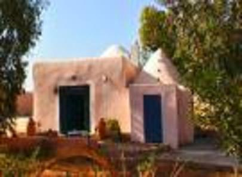

VI LA MOSQUEE
Par les sables et les palmiers, elle brille
Toit verni, bulbe bleu, coupant l'horizon,
Et par cette longue complainte tranquille
Qui est rumeur plus sage que la raison.
Sous les roses au jardin dort le poète,
Sous le verset de marbre et le dôme blanc.
Le désert est sa dernière conquête,
Le sable le chapelet au doigt tremblant
D'avoir caressé trop de flancs, trop de rêves,
D'être devenu presque pareil au vin
Qui se dissipe comme un wadi des grèves
Et dont le charme qu'il répand n'est pas vain.
Michel Galiana (c) 1991
VI THE MOSQUE
Amidst sands and palm trees, far away it glitters.
Varnished roof and blue dome loom on the horizon.
And from it rises this long, quiet, doleful prayer
A rumour wiser than are wisdom and reason.
In the garden, under the rose bush sleeps the poet,
Under engraved verse, beneath a white shelter.
His last, everlasting conquest was the desert,
The sand, the string of beads on his trembling finger
Which stroked too many flanks, aye, and too many dreams,
And slowly have become similar to potions
Pouring elation, brief like short-lived coastal streams,
As well as enduring and genuine seduction.
Transl. Christian Souchon 01.01.2005 (c) (r) All rights reserved
Listen to "The Mosque" in English
Peut-être s'agit-il, ici encore du tombeau de Hafez
Is it another description of Hafiz's grave?